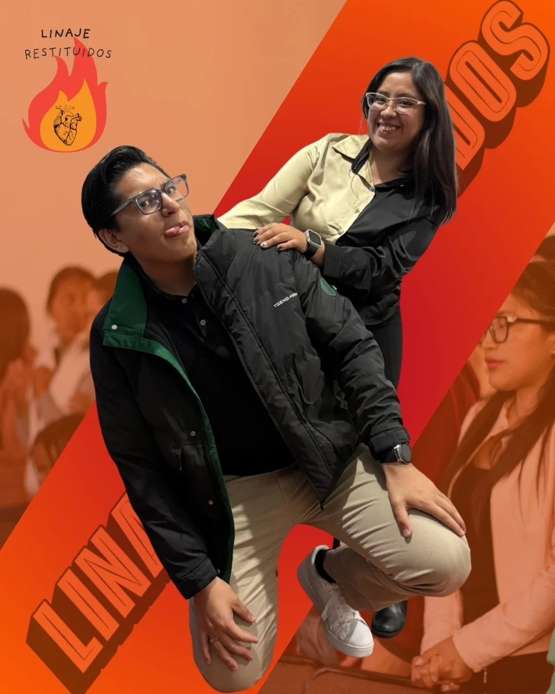

RESTITUIDOS
"Os restituiré los años que comió la oruga."

"Os restituiré los años que comió la oruga."

"Os restituiré los años."
JOEL 2:25
Restituidos cree en un Dios que repara lo roto y devuelve lo que parecía perdido. Aquí encontramos sanidad y un fuego en el corazón que no se apaga.
Lo que el enemigo intentó destruir, Él lo restituye con creces.
Descripción completa, propósito y testimonios del grupo.
Aquí irán los nombres y una breve presentación del líder o líderes del grupo.
Collage con fotos del grupo reunido, retiros y momentos especiales.
Ven, conócenos un sábado y forma parte de esta familia.
Escríbenos en Instagram Ver otros grupos